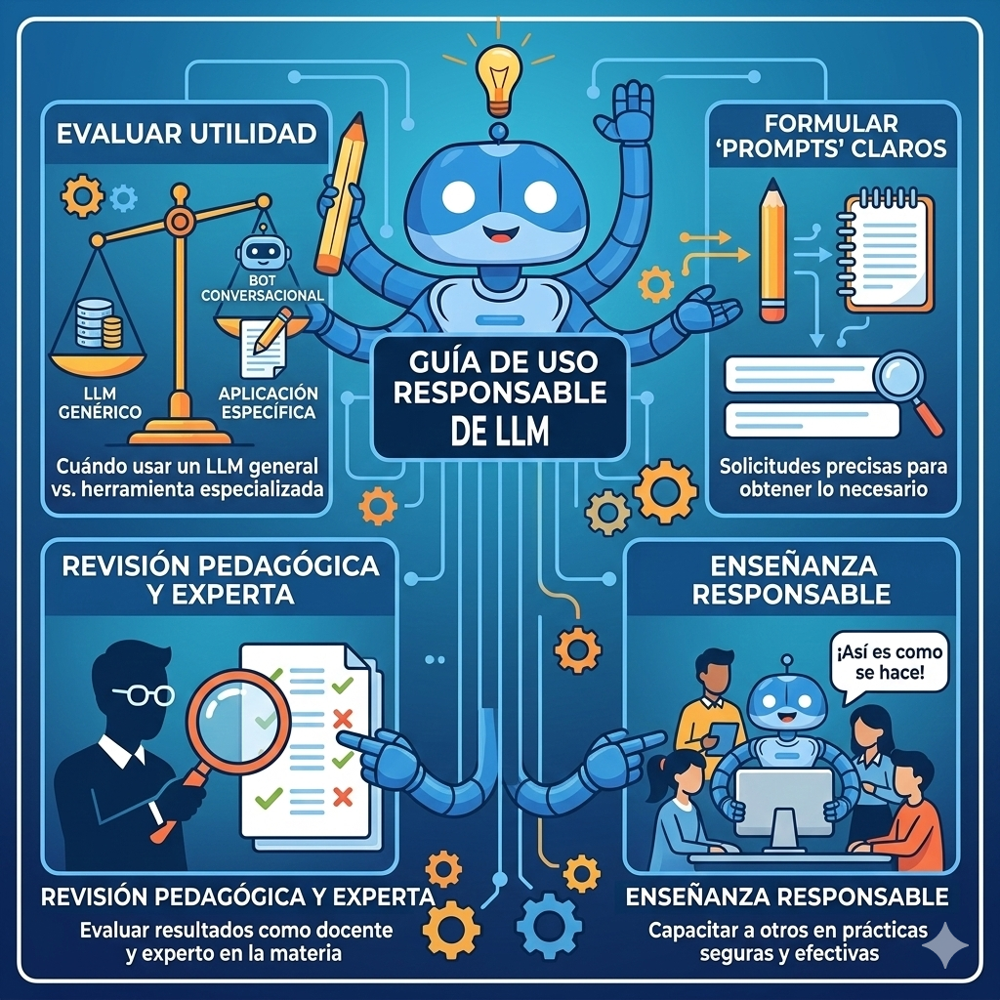

Módulo 1: Fundamentos, potencial pedagógico y ética de los LLM en la gestión docente
Resumen:
Bienvenida al módulo 1
Bienvenidos y bienvenidas al primer módulo de este programa de formación profesional. En los últimos dos años, hemos presenciado cambios sin precedentes en el panorama educativo global. Las herramientas de inteligencia artificial, en particular los Modelos de Lenguaje de Gran Tamaño (LLM), han dejado de ser ciencia ficción para convertirse en tecnología accesible en nuestras aulas, oficinas y hogares.
Pero aquí surge una pregunta fundamental que quizás muchos de ustedes se han hecho:
"¿Qué es exactamente un LLM? ¿Cómo y dónde funciona? ¿Es una herramienta que puedo usar responsablemente en mi práctica docente, o debo tener precaución?"
Este módulo responde esas preguntas, no desde una perspectiva de tecnicismo informático, sino desde una óptica pedagógica y práctica. Lo que proponemos es que transiten de la incertidumbre o rechazo inicial a una comprensión clara y fundamentada de qué es un LLM como tecnología base, cómo se diferencia de un bot o aplicación que lo usa, qué pueden hacer en favor de su gestión docente, y lo más importante, qué no deben hacer sin su vigilancia y criterio profesional.
Como maestros y maestras, ustedes ya enfrentan una realidad que los números confirman: la sobrecarga administrativa. Planificaciones, rúbricas, informes de progreso, correos a padres, actualizaciones de expedientes, reuniones... Todo esto suma horas que podrían dedicarse a lo que realmente transforma vidas: la interacción pedagógica con sus estudiantes y el mentorado de futuros maestros.
Paralelamente, sus estudiantes, especialmente en niveles más altos, ya están usando aplicaciones basadas en LLM, como chatbots y asistentes de escritura. Algunos lo hacen responsablemente; otros, sin enterarse de los riesgos o sin guía sobre la ética. Como educadores, tienen la responsabilidad y la oportunidad de modelar un uso informado, crítico y ético de estos recursos.
Por eso, este módulo se fundamenta en tres pilares teóricos que ustedes, como docentes reflexivos, conocen bien:
Objetivo general
Capacitar a los maestros cooperadores para que comprendan de forma pedagógica qué es un LLM, lo distingan de los bots, aplicaciones o recursos tecnológicos que lo utilizan (como ChatGPT, Copilot u otras herramientas educativas), reconozcan sus riesgos éticos y legales, y asuman el rol de experto validador que utiliza la IA como apoyo manteniendo siempre el control, la revisión crítica y la responsabilidad profesional.
Objetivos específicos
Al finalizar este módulo, usted:
- Comprenderá qué es un LLM en términos que tengan sentido pedagógico (sin tecnicismos innecesarios).
- Diferenciará entre un LLM como tecnología base de lenguaje y las aplicaciones que lo utilizan (por ejemplo, bots conversacionales o asistentes integrados en otras plataformas).
- Diferenciará entre un LLM y otros recursos tecnológicos que quizás ya usa (buscadores web, plataformas LMS, aplicaciones de productividad).
- Identificará aplicaciones educativas concretas basadas en LLM según su área de enseñanza (Matemáticas, español, educación especial, etc.).
- Reconocerá los riesgos éticos y legales asociados al uso de LLM y de las aplicaciones que los incorporan (privacidad de datos, sesgos, dependencia tecnológica).
- Adoptará el rol de "experto validador": alguien que utiliza la IA como apoyo, pero mantiene el control, la revisión crítica y la responsabilidad profesional sobre todas las decisiones pedagógicas.

Guía de Uso Responsable
Este módulo no busca que se conviertan en "expertos en IA". Busca que se conviertan en docentes informados y críticos que puedan:
- Evaluar cuándo un LLM es útil en su práctica y cuándo es más apropiado utilizar una aplicación concreta basada en LLM (por ejemplo, un bot conversacional, un asistente en el procesador de texto o un generador de rúbricas).
- Formular solicitudes claras ("prompts") para obtener lo que necesitan.
- Revisar el resultado con ojos de pedagogo y experto en su materia.
- Enseñar a otros (estudiantes, colegas, practicantes) a hacer lo mismo de forma responsable.